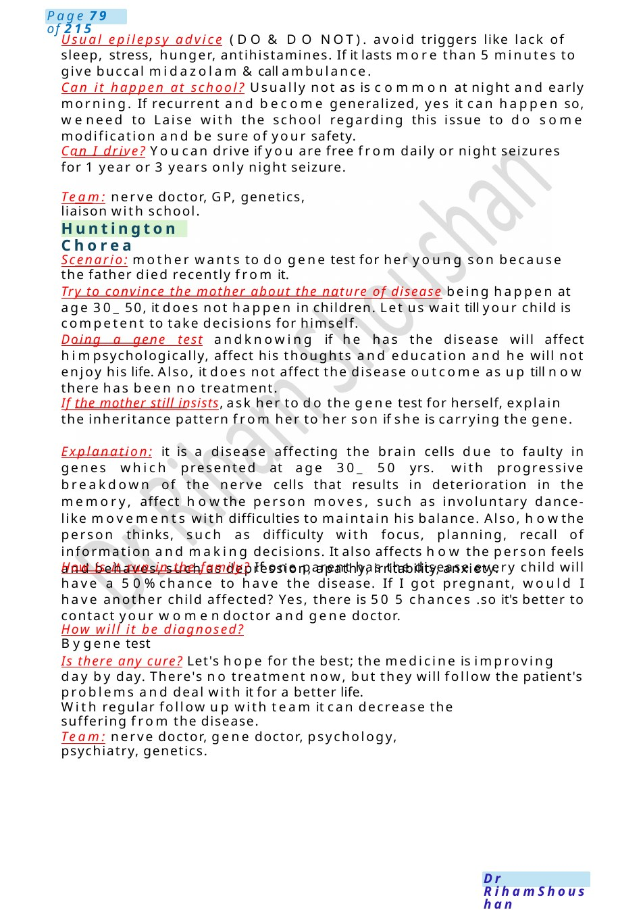

Rolandic Epilepsy
Is my child at risk of developing Epilepsy? Family history of epilepsy in a first-degree relative, Existing neurodevelopmental delay, Existing cerebral palsy, History of complex febrile convulsions. The risk mayincrease with family history of epilepsy and existing brain damage. Is it affecting his brain later in life: short seizures will not affect his brain functions.
Scenario Summary
Is my child at risk of developing Epilepsy? Family history of epilepsy in a first-degree relative, Existing neurodevelopmental delay, Existing cerebral palsy, History of complex febrile convulsions. The risk mayincrease with family history of epilepsy and existing brain damage. Is it affecting his brain later in life: short seizures will not affect his brain functions.
Full Original Scenario

Rolandic Epilepsy
Is my child at risk of developing Epilepsy? Family history of epilepsy in a first-degree relative, Existing neurodevelopmental delay, Existing cerebral palsy, History of complex febrile convulsions. The risk mayincrease with family history of epilepsy and existing brain damage.
Is it affecting his brain later in life: short seizures will not affect his brain functions.
Any relation to vaccination: no relation, you can give it to him safely. Just give her antipyretic for fever.
Advice& red flags.
Scenario: girl has 3 episodes the last one 6 wsago with secondary generalization. Talk to momabout EEGfinding which shows Rolandic epilepsy. Ask about the name of medication, SE, advice, can happen at school, can he drive?
Draw the brain & impulses coming out of it during explanation.
Definition of Rolandic epilepsy: it is a type of seizure which happens very simply, and most children grow out of it by the age of 16. Benign means simple seizures. Rolandic means it affects a certain area of the brain called Rolandic area.
How it happens: this is the brain, the maestro of our body whosends impulses to the muscles of the whole body to contract in a harmonic way. In benign Rolandic seizures, these impulses happen suddenly out of control affecting usually one side of the body, however in some kids it can spread and involve the whole-body muscles.
What happens during the attack: They typically happen in the early morning or just before bedtime. They also can happen during sleep. The seizures usually last less than 2 minutes. During one, a child will have: twitching, usually in the face, but it can include the arms and/or legs, numbnessand tingling in the face or tongue, drooling, problems speaking
if awake, full awareness during the seizure, Sometimes, a seizure can develop into a generalized tonic- clonic seizure in which the whole-body jerks with forceful movements.
What is the EEG finding, are you sure about your diagnosis? Yes, we are sure because it has a characteristic pattern in the EEGwhich wedescribe as centrotemporal spikes.
What is the cause behind that, is it inherited? Usually it's unknown, but it runs in families due to genetic causes.
Treatment & its SE? Usually, there is noneed for treatment unless in somesituations like, if recurrent, become generalized, more frequent, happens in the daytime, affecting sleep, activity or associated with learning problems or parent concern.
Levetiracetam or lamotrigine will be prescribed by nerve doctor (SE: skin rash, suppression of the bone marrow which is the main factory of blood cells in our body, so you can feel fatigue, pallor or bleeding from your gum) if such happened, please contact the nerve doctor.

Huntington Chorea
Usual epilepsy advice (DO & DO NOT). avoid triggers like lack of sleep, stress, hunger, antihistamines. If it lasts more than 5 minutes to give buccal midazolam &call ambulance.
Can it happen at school? Usually not as is common at night and early morning. If recurrent and become generalized, yes it can happen so, weneed to Laise with the school regarding this issue to do some modification and be sure of your safety.
Can I drive? Youcan drive if you are free from daily or night seizures for 1 year or 3 years only night seizure.
Team: nerve doctor, GP, genetics, liaison with school.
Scenario: mother wants to do gene test for her young son because the father died recently from it.
Try to convince the mother about the nature of disease being happen at age 30_ 50, it does not happen in children. Let us wait till your child is competent to take decisions for himself.
Doing a gene test andknowing if he has the disease will affect himpsychologically, affect his thoughts and education and he will not enjoy his life. Also, it does not affect the disease outcome as up till now there has been no treatment.
If the mother still insists, ask her to do the gene test for herself, explain the inheritance pattern from her to her son if she is carrying the gene.
Explanation: it is a disease affecting the brain cells due to faulty in genes which presented at age 30_ 50 yrs. with progressive breakdown of the nerve cells that results in deterioration in the memory, affect howthe person moves, such as involuntary dance-like movements with difficulties to maintain his balance. Also, howthe person thinks, such as difficulty with focus, planning, recall of information and making decisions. It also affects how the person feels and behaves, such as depression, apathy, irritability, anxiety.
How is it run in the family? If one parent has the disease every child will have a 50%chance to have the disease. If I got pregnant, would I have another child affected? Yes, there is 50 5 chances .so it's better to contact your womendoctor and gene doctor.
How will it be diagnosed? Bygene test
Is there any cure? Let's hope for the best; the medicine is improving day by day. There's no treatment now, but they will follow the patient's problems and deal with it for a better life.
With regular follow up with team it can decrease the suffering from the disease.
Team: nerve doctor, gene doctor, psychology, psychiatry, genetics.